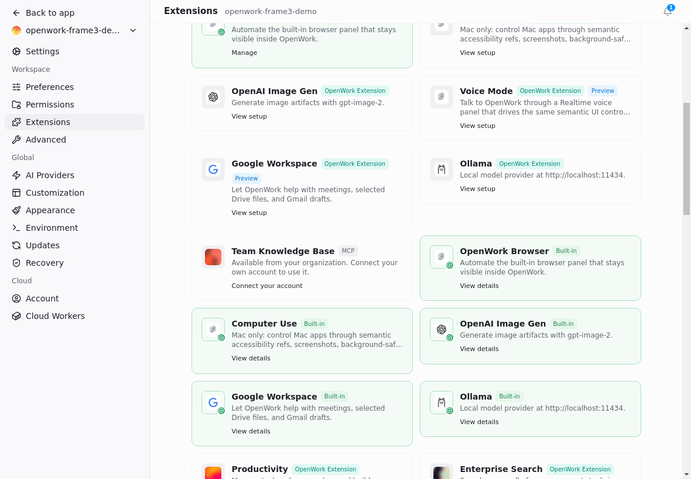
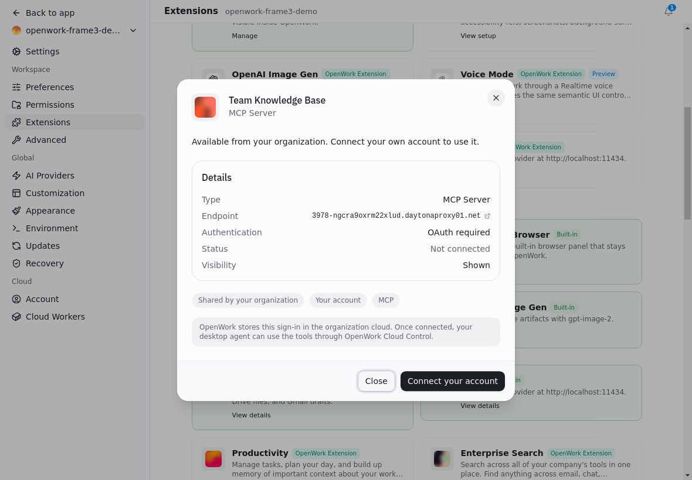
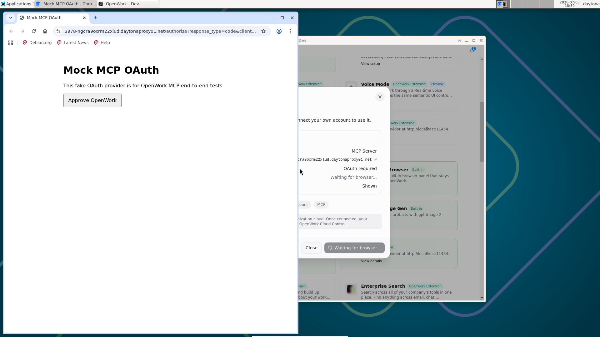
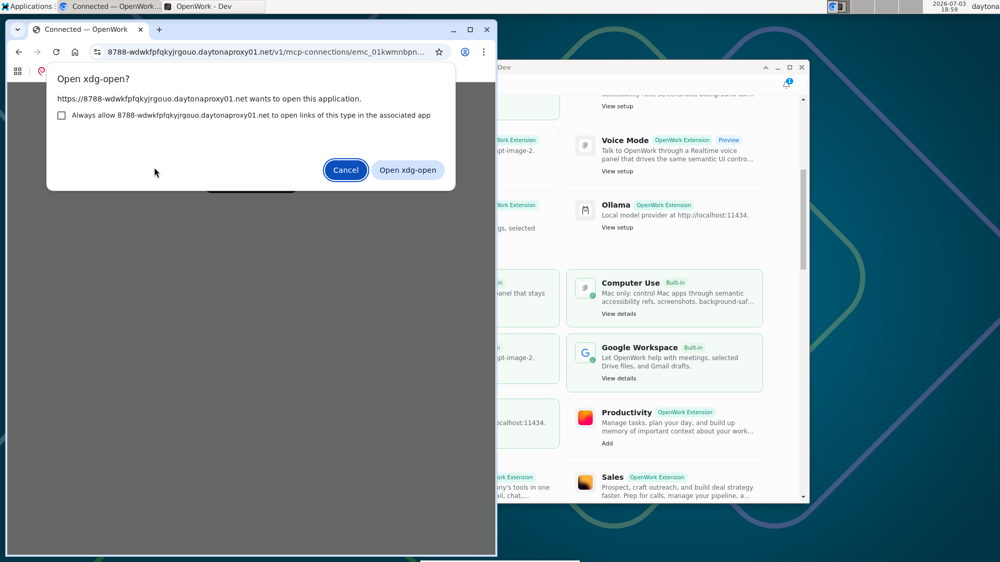
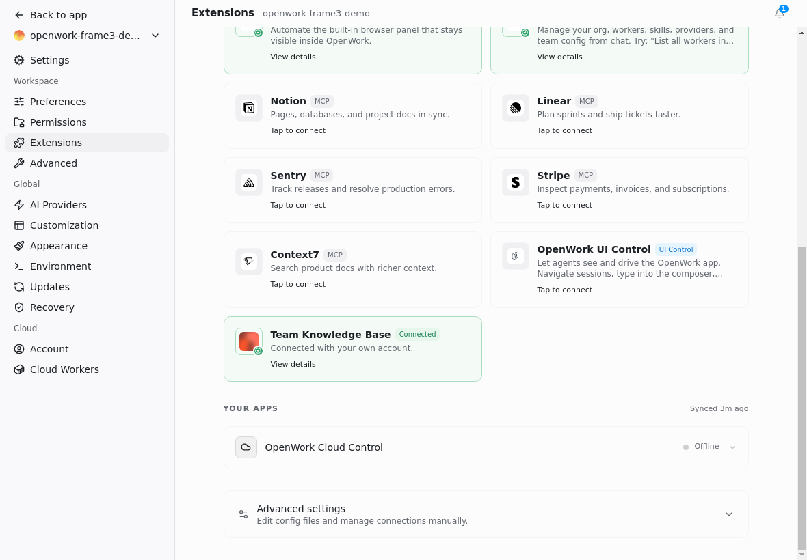
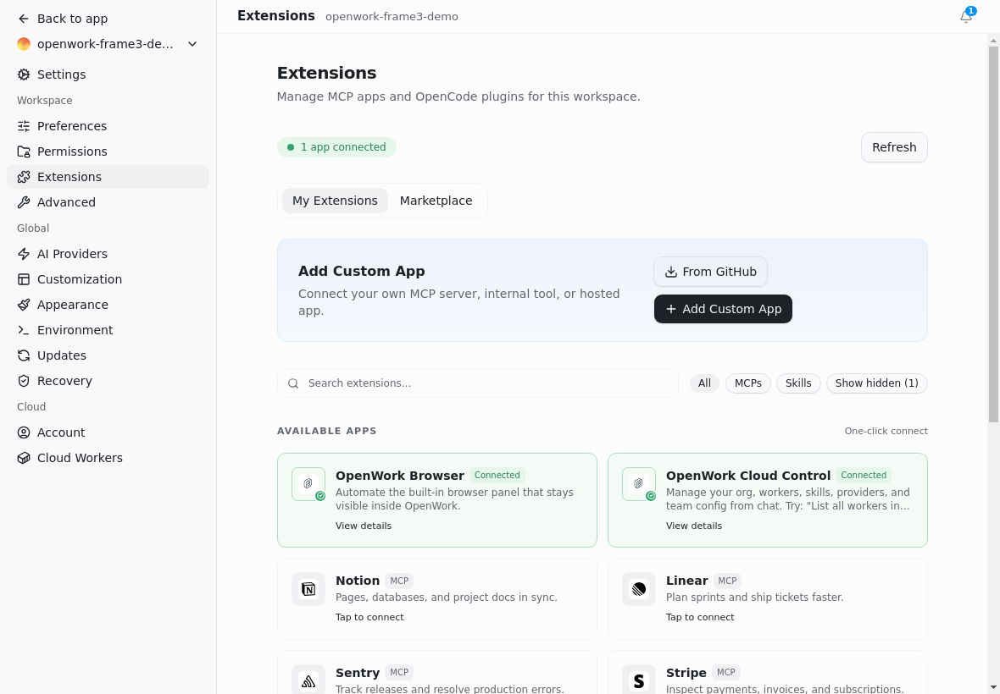

Branch: feat/desktop-mcp-consolidation (commit 3dcc34f) · Two independent Daytona sandboxes: Den server + Electron desktop · Member “Jordan” played by seeded org member jordan.demo@acme.test · Mock OAuth+MCP server run with AUTO_APPROVE=0 so a real consent screen had to be clicked (closest possible stand-in for a real Notion/Linear OAuth screen — same RFC 8414 discovery + RFC 7591 dynamic client registration + PKCE S256 that a real Notion MCP OAuth flow uses).
Result:PASSED
7 claims, all backed by an observable assertion + screenshot
Why this goes further than the PR's own eval
The PR's desktop-org-mcp-demo.flow.mjs Frame 3 only asserts the mock IdP's request log. It never confirms a real OS browser window actually opened — it could theoretically pass even if shell.openExternal silently no-op’d, as long as something (e.g. a background fetch) hit /authorize. This run adds the missing piece: independent window-manager evidence (wmctrl) that a separate Chromium process really opened on the Electron sandbox's display, plus a driven click on the real consent screen (not a stub), plus verification of the resulting redirect and deep-link.
Setup (invisible, API-driven)
Admin publishes a per-member org MCP connection pointed at a real, publicly-reachable mock IdP
Claim: Den API lets an org owner create a per_member / orgWide MCP connection, and the target member can see it as usable but not yet connected.
POST /v1/mcp-connections as alex@acme.test (owner) returns 201 with id emc_01kwmnbpn8fzy825dvh9pj0fyf.
GET /v1/mcp-connections?scope=usable as member jordan.demo@acme.test shows the connection with connectedForMe: false.
Mock server health: autoApprove:false — consent requires a real click, not silent auto-approve.
Frame 2
Jordan discovers the connection in the desktop Extensions Marketplace
Claim: the org connection renders as an ordinary Marketplace card with a "Connect your account" action — not a special org-only panel.

Electron app (Daytona sandbox, real CDP session) · card reads “Team Knowledge Base · MCP · Available from your organization. Connect your own account to use it. · Connect your account”.
Frame 3a
Consent copy renders before the click
Claim (verbatim from PR): "consent copy OpenWork stores this sign-in visible."

Modal text captured via CDP: “OpenWork stores this sign-in in the organization cloud. Once connected, your desktop agent can use the tools through OpenWork Cloud Control.”
Frame 3b — the part the PR's own eval never proved
A real, separate Chromium window opened on the OS — not a client-side stub
Claim: clicking "Connect your account" invokes Electron's shell.openExternal, which hands off to the sandbox's real default browser (Chromium via xdg-open), producing a genuine second top-level window.
wmctrl -l before click: only OpenWork - Dev (+ xfce chrome) existed.
wmctrl -l immediately after click: a new window titled "Mock MCP OAuth - Chromium" appeared — a real separate process, not a modal inside Electron (contextBridge freezes exposed APIs, so this cannot be a client-side fake).

Daytona display capture (noVNC framebuffer, not a CDP screenshot): a genuine Chromium browser window, its own address bar showing the mock IdP's real domain, sitting in front of the Electron app (visible behind, showing "Waiting for browser..." — proof the desktop app is actively polling, not faking state). This consent screen is protocol-identical to what a real Notion/Linear MCP OAuth screen looks like: real address bar, real "Approve" button belonging to the external provider's own page, not an in-app dialog.
Frame 3c
Real GET /authorize on the external mock IdP, with signed state, dynamic client_id, and a redirect_uri scoped to this exact connection
Claim (verbatim from PR): "the external mock IdP logged a real GET /authorize carrying signed state, a dynamically registered client_id, and a redirect_uri scoped to this exact connection id."
Prior request in the same log: POST /register (RFC 7591 dynamic client registration) → issued client_id=mock-client-5c991ac5-9080-4f26-b7b7-bb7beb510ad9.
GET /authorize carries that exact client_id, plus code_challenge/code_challenge_method=S256 (PKCE, same as real Notion OAuth), plus state.
redirect_uri=https://8788-….daytonaproxy01.net/v1/mcp-connections/emc_01kwmnbpn8fzy825dvh9pj0fyf/connect/callback — contains this exact connection id, not a generic callback.
state decodes (base64url payload before the signature segment) to { organizationId, orgMembershipId: Jordan's own membership, providerId: this connection, nonce, exp } — scoped to this specific member + connection + a bounded expiry, and carries a trailing signature segment.
Frame 3d — simulating the actual Notion-style approve click
Driving the real consent screen as a human would (xdotool on the real window, not CDP/eval)
Claim: a genuine click on the external page's own "Approve OpenWork" button (not a scripted DOM event inside the app) completes the authorization_code grant.
xdotool clicked physical screen coordinates inside the real Chromium window (window-manager driven, exactly like a human).
Mock IdP log immediately recorded: POST /approve (same params) → 302 redirect → GET /.well-known/oauth-protected-resource/mcp + oauth-authorization-server (Den re-running discovery) → POST /token (PKCE-verified code exchange, S256 verifier checked server-side by the mock IdP).
Browser window title flips to "Connected — OpenWork - Chromium" — Den's own OAuth callback page, deep-linking back to the desktop app via the openwork:// custom scheme (visible as an OS "Open xdg-open?" confirmation in this Linux sandbox, since the app isn't registered as the default handler here — on a real user's macOS/Windows machine this is a one-click native OS prompt or fully silent).

Real Chromium window after approval: page title "Connected — OpenWork", URL on Den's own domain (/v1/mcp-connections/emc_.../connect/callback), and the OS asking to hand off to the openwork:// deep link.
Frame 4
The desktop card flips to Connected without any reload — and the static Quick Connect grid is untouched
Claim: the same card the member clicked now shows Connected, driven purely by the app's own poll loop (no location.reload() was ever called after the click), and pre-existing static entries (Notion, Linear, Sentry, Stripe, Context7, OpenWork UI Control) still render exactly as before — this is the PR's own regression guard, independently reproduced here.
Server-side: GET /v1/mcp-connections?scope=usable for Jordan now returns connectedForMe: true.
UI: card reads "Team Knowledge Base · Connected · Connected with your own account." in My Extensions.
Same screenshot shows Notion / Linear / Sentry / Stripe / Context7 / OpenWork UI Control all still present with "Tap to connect" — the static grid was not removed or broken by the org-connection feature.

My Extensions tab, no reload since the OAuth click: connection Connected, static Quick Connect grid (Notion/Linear/Sentry/Stripe/Context7/OpenWork UI Control) rendering unchanged.
Regression check (coded eval, same live session)
settings-extensions-mcp.flow.mjs still passes
Claim: the pre-existing MCP settings regression guard (added for #2008) is unaffected by this feature, run against the exact same live Electron session used above (not a fresh boot).
All 5 steps green: tabs render, "Add Custom App" present, "Available apps" section present, "OpenWork Cloud Control" + at least one of Notion/Linear present.

Screenshot captured by the coded regression flow itself.
Static regression (non-UI)
typecheck + unit tests, run on the PR branch inside the Daytona sandbox
pnpm --filter @openwork/app typecheck → clean, no errors.
bun test tests/ (apps/app) → 102 pass, 0 fail, 206 expect() calls across 21 files, including the 4 new org-mcp-connections.test.ts cases for resolveOrgMcpConnectionCardState.
Environment notes (stated explicitly per validator rules)
Two independent Daytona sandboxes were used: openwork-frame3-server (MySQL + Den API + Den Web + the mock OAuth/MCP server, all publicly reachable) and a separate Electron sandbox (openwork-test-20260703-115114) running the real desktop app pointed at that Den server — this is a stricter topology than same-machine local dev, since the OAuth redirect and token exchange had to cross the public internet between two independent sandboxes.
"Jordan" is the seeded org member jordan.demo@acme.test, invited via the real invitation API and accepted via the real accept-invitation API (email verified via a direct DB flag flip, equivalent to the flow's own MARK_VERIFIED_CMD mechanism, since no mail transport exists in this sandbox).
The mock OAuth+MCP server was run with AUTO_APPROVE=0 (the PR's own demo runs it with auto-approve on, which never renders a clickable consent screen at all) specifically so a real, driven approve-click could be captured — this is the closest available simulation of a live Notion/Linear MCP OAuth screen without needing real Notion credentials.
The final openwork:// deep-link handoff shows a generic Linux "Open xdg-open?" confirmation dialog because this sandbox has no default-app registration for the custom scheme; this is a sandbox artifact, not a product defect — the connection's server-side state (connectedForMe: true) and the desktop's own poll loop is what actually flips the UI, independent of whether the deep link is followed.
Frame 5 from the PR's own demo (agent executing the tool in real chat) was not reproduced here; this run was scoped to Frame 3 plus its immediate regression surface per the request.